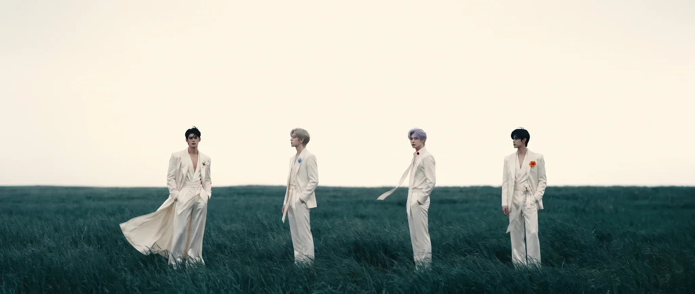

장마의
잔향1st Album · 10 Tracks · 2026
열 곡이 한 계절을 지난다. 사이트에서는 30초 미리듣기만 열려 있고, 정식 음원은 유통 뒤에 링크를 붙인다.
Intro
힉스필드로는 긴 뮤직비디오가 어려워서, 사이트에는 인트로 한 장면만 둔다. 15초 인트로를 만드는 중이라 지금은 포스터만 걸어 뒀어.

 임시 포스터 · 15초 인트로 준비 중
INTRO · 00:15준비 중
임시 포스터 · 15초 인트로 준비 중
INTRO · 00:15준비 중
- 0–2먹비
- 2–5태준
- 5–8유성
- 8–11진우
- 11–13류현
- 13–15넷
02 / 30s preview
Listen
곡을 누르면 30초만 재생돼. 다른 곡이나 영상을 틀면 앞의 소리는 멈춰.